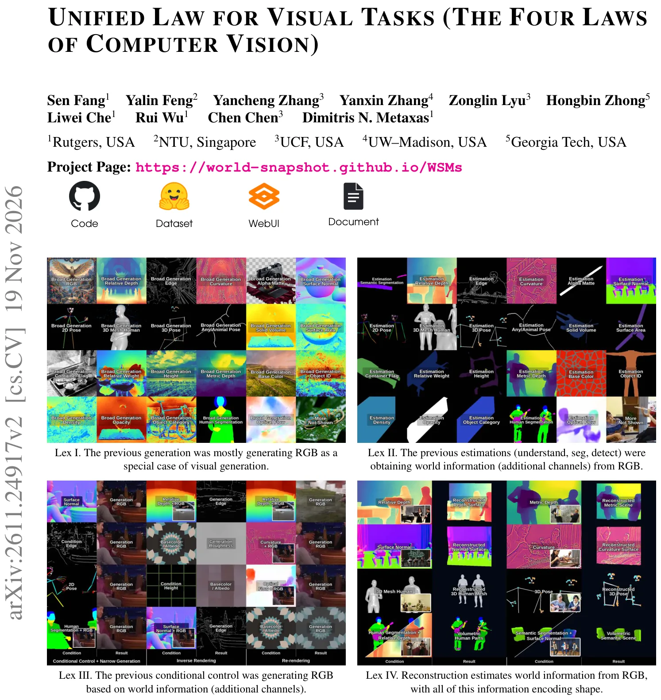
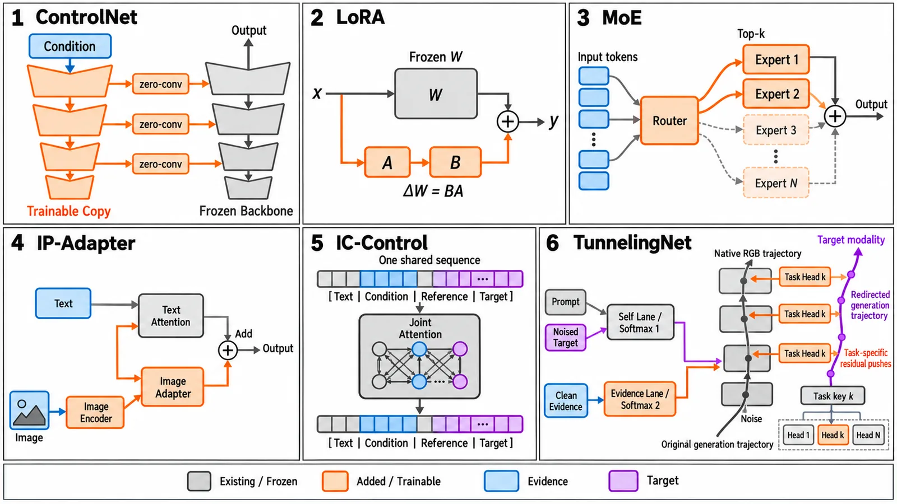
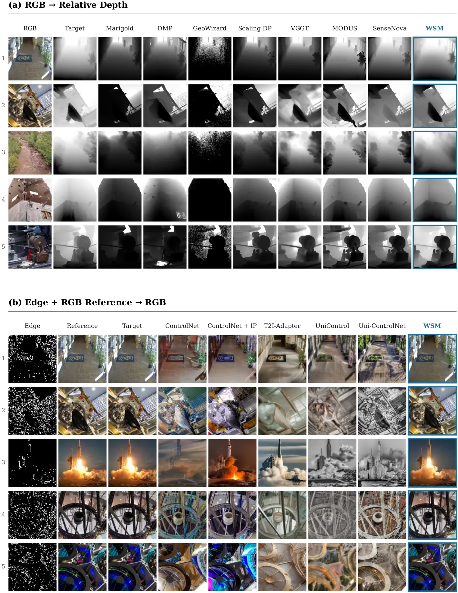
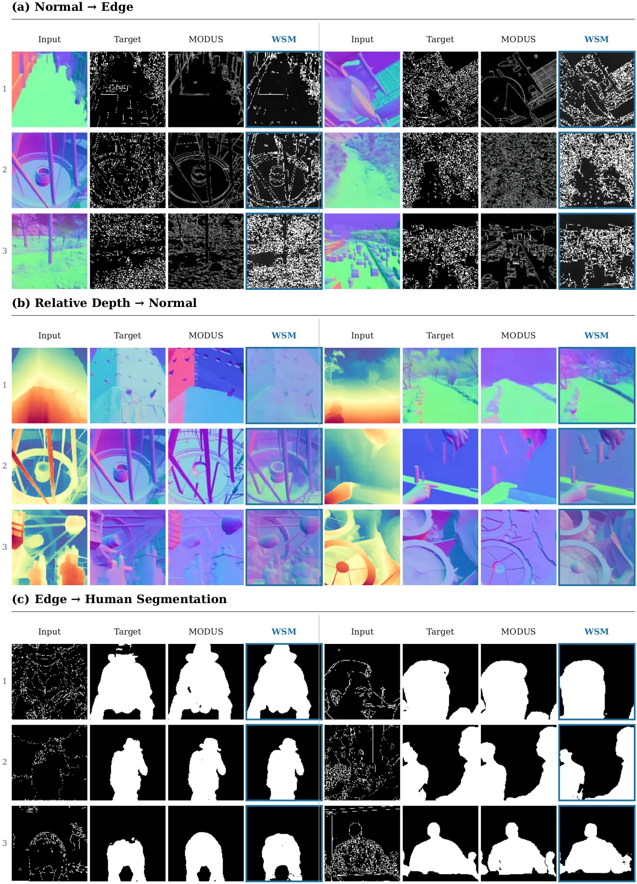

O Desafio da Unificação em Visão Computacional
A visão computacional (CV) tem historicamente evoluído através de modelos especializados para tarefas específicas: detecção de objetos, segmentação semântica, estimativa de profundidade, entre outras. Embora modelos de linguagem grandes (LLMs) tenham demonstrado uma unificação impressionante em Processamento de Linguagem Natural (NLP), replicando esse sucesso em visão tem sido um desafio persistente. A expectativa atual é que exista um 'modelo de mundo' capaz de generalizar para quase todas as tarefas visuais, similar ao papel dos LLMs no NLP.
No entanto, a transferência direta de ideias como 'prever o próximo token' para o domínio visual enfrenta obstáculos fundamentais. Dados visuais não podem ser resumidos facilmente em um formato simples de pergunta e resposta, e as tarefas de CV aparecem em formas extremamente diversas. Além disso, treinar modelos separados para cada variação de tarefa se torna computacionalmente proibitivo à medida que o número de capacidades desejadas cresce.
Este paper, intitulado 'Unified Law for Visual Tasks (The Four Laws of Computer Vision)', propõe uma mudança de paradigma. Os autores argumentam que a unificação real em CV não vem de adaptar prompts de texto, mas de reformular todas as tarefas visuais como problemas de geração. A hipótese central é que, se todas as informações do mundo podem ser codificadas em uma imagem, então o processamento de imagens é, essencialmente, o processamento do mundo.

A Hipótese do World Snapshot e o Formato .wsg
O ponto de partida teórico do paper é o que os autores chamam de 'Lei Unificada': a geração anterior focava principalmente em RGB como um caso especial de geração visual. Eles propõem que, se toda a informação do mundo for codificada em uma imagem, essa imagem se torna um 'World Snapshot' (Instantâneo do Mundo). Inspirados no princípio holográfico da física, que sugere que um espaço de dimensão n+1 pode ser codificado em um espaço de dimensão n, os autores hipotetizam que uma imagem rica em informação pode aproximar um quadro do mundo.
Para validar essa hipótese, os autores introduzem um novo formato de dados de imagem chamado World Snapshot Graphics (.wsg). Diferente de uma imagem RGB padrão, que possui 3 canais (Vermelho, Verde, Azul), o formato .wsg suporta até 256 canais. Cada canal adicional armazena atributos específicos do mundo, como estrutura espacial, poses humanas e animais, física (como gravidade e peso relativo), áudio, semântica, profundidade relativa, métrica, normais de superfície, curvatura, opacidade, densidade e IDs de objetos.
Essa densidade de informação é crucial. Ao colocar todos esses atributos em canais distintos de uma única imagem, os autores criam uma representação onde a geração de imagem não é apenas a criação de pixels coloridos, mas a geração de um estado completo do mundo. Isso permite que tarefas tradicionalmente vistas como distintas — como estimar a profundidade de uma cena ou segmentar um humano — sejam tratadas como a geração de canais específicos dentro desse snapshot unificado.
As Quatro Leis e a Reformulação das Tarefas
Os autores categorizam todas as tarefas visuais em quatro grandes famílias, derivadas das relações direcionais fundamentais quando RGB, texto e atributos não-RGB do mundo servem como condições ou alvos. Essas quatro categorias, ou 'Leis', são: Geração (criar uma nova imagem/snapshot a partir de condições), Estimativa (prever atributos do mundo a partir de uma imagem), Controle Condicional (usar uma imagem como guia para modificar outra geração) e Reconstrução (recuperar a estrutura original).
A inovação conceitual aqui é tratar todas essas quatro categorias como formas de geração. Em vez de treinar quatro modelos separados para cada categoria, o World Snapshot Model (WSM) é treinado para gerar o snapshot completo. Se a tarefa é estimativa, o modelo gera os canais correspondentes ao atributo desejado. Se é controle, ele usa a imagem de entrada como condição para gerar um novo snapshot modificado. Isso simplifica drasticamente a arquitetura do sistema, eliminando a necessidade de módulos especializados para cada tipo de tarefa.
Essa abordagem é denominada 'Broad Vision' (Visão Ampla), em contraste com a 'Narrow Vision' (Visão Estreita) do passado, que focava em gerar apenas RGB ou estimar poucos atributos isoladamente. Ao expandir o escopo para todos os atributos do mundo, os autores buscam criar um modelo único que possa realizar centenas de tarefas com uma única arquitetura de backbone, similar à forma como os LLMs unificaram tarefas de NLP.
TunnelingNet: A Arquitetura para Escalabilidade
Um dos maiores desafios ao tentar unificar milhares de tarefas é a eficiência de treinamento e a escala de parâmetros. Métodos existentes para expandir capacidades de modelos pré-treinados, como ControlNet, LoRA (Low-Rank Adaptation), MoE (Mixture of Experts), IP-Adapter e IC-Control, têm limitações. O LoRA, por exemplo, pode adquirir novas capacidades em horas ou dias, mas torna-se insuficiente quando se enfrenta milhares de tarefas distintas, exigindo um número excessivo de parâmetros ou um custo computacional proibitivo.
Para resolver isso, os autores propõem o TunnelingNet. A ideia central é atribuir cada modalidade (cada canal ou tipo de informação no .wsg) a um fluxo de aprendizado separado, mas conectado através de um 'túnel' compartilhado. Em vez de modificar toda a rede para cada nova tarefa, o TunnelingNet permite que o modelo roteie condições específicas para os fluxos apropriados. Isso cria uma arquitetura esparsa e modular, onde a capacidade do modelo expande em ordens de magnitude enquanto o crescimento do número de parâmetros é mínimo.
O TunnelingNet utiliza uma técnica chamada 'Deep Tunneling Learning'. Durante o treinamento, o modelo aprende a navegar por esses túneis para gerar os canais corretos. Se a entrada é uma imagem RGB e o alvo é a estimativa de profundidade, o modelo gera o canal de profundidade do snapshot. Se a entrada é um texto e o alvo é uma imagem RGB, ele gera o canal RGB. Essa flexibilidade permite que um único conjunto de pesos seja reutilizado para inúmeras combinações de entrada e saída.

Validação Empírica: Mais de 1.000 Tarefas
Para validar a 'Lei Unificada', os autores treinaram e avaliaram o WSM em mais de 1.000 tarefas visuais distintas, definidas por mapeamentos únicos de entrada e saída. Isso inclui tarefas clássicas como segmentação semântica, estimativa de profundidade relativa e métrica, detecção de bordas, normais de superfície, poses 2D e 3D, fluxo óptico, entre muitas outras listadas no paper.
Os resultados quantitativos mostram que o WSM consegue realizar essas tarefas com uma precisão competitiva ou superior a métodos especializados. O paper apresenta uma 'Análise de Matriz Cross-Modal', demonstrando a capacidade do modelo de converter entre diferentes representações visuais. Por exemplo, o modelo pode converter uma imagem de normais de superfície em uma imagem de bordas, ou estimar a profundidade relativa a partir de uma imagem RGB, tudo sem re-treinamento específico para cada par de tarefas.
Uma métrica importante apresentada é a 'Calibração de Correspondência Previsão-Alvo'. Os autores verificam se as previsões do modelo correspondem realmente aos alvos físicos ou semânticos esperados, e não apenas a padrões superficiais. Os resultados indicam que o WSM aprendeu genuinamente as relações subjacentes entre os atributos do mundo, em vez de memorizar correlações espúrias nos dados de treinamento.

Resultados Qualitativos e Conversão de Representações
Além das métricas quantitativas, o paper apresenta uma extensa avaliação qualitativa. Os autores demonstram a capacidade do WSM de realizar 'conversão de representação'. Na Figura 17, por exemplo, mostra-se a conversão de normais de superfície para bordas, profundidade relativa para normais, e bordas para segmentação humana. Essas conversões são realizadas de forma coerente, mantendo a consistência geométrica e semântica da cena.
Os resultados também destacam a eficiência do modelo em tarefas de geração condicional. Quando fornecido com um esboço ou uma pose humana, o WSM pode gerar uma imagem RGB realista que respeita essas condições, assim como modelos de geração de imagem tradicionais, mas sem a necessidade de um ControlNet dedicado ou de um LoRA específico para aquela tarefa.
Os autores também avaliam o modelo em tarefas de 'Inverse Rendering' (Renderização Inversa), onde o objetivo é recuperar propriedades de materiais e iluminação a partir de imagens. O WSM demonstra capacidade de estimar cores base, opacidade e densidade, integrando essas informações no formato .wsg de forma consistente.

Limitações e Escopo
Apesar dos resultados promissores, o paper reconhece limitações importantes. Primeiro, o formato .wsg é uma abstração teórica e prática. Embora o paper defina o formato, a coleta de dados reais que contenham todos esses 256 canais para um grande conjunto de imagens é um desafio significativo. Muitos dos dados utilizados foram sintéticos ou gerados através de pipelines de conversão, o que pode introduzir vieses ou erros de anotação.
Segundo, a 'Lei Unificada' não cobre todas as tarefas visuais possíveis. O paper identifica tarefas que não se encaixam no framework, como reconhecimento de íris, detecção de anomalias supervisionadas, recuperação de objetos 3D baseada em linguagem, e tarefas temporais complexas como síntese de visualização temporal. Essas tarefas requerem estruturas de dados diferentes (como grafos, texturas temporais ou embeddings de linguagem) que não são facilmente mapeadas para o formato de imagem densa do .wsg.
Além disso, a eficiência computacional do TunnelingNet em inferência não é detalhada em profundidade. Embora o treinamento seja mais eficiente em termos de parâmetros, a inferência de um modelo tão amplo pode ser custosa, dependendo de como os túneis são ativados. O paper foca principalmente na capacidade de unificação e na validade da hipótese, deixando a otimização para aplicações em tempo real como trabalho futuro.
Conclusão: Um Passo Rumo ao Modelo de Mundo?
O paper 'Unified Law for Visual Tasks' oferece uma contribuição significativa para a discussão sobre a unificação em visão computacional. Ao propor que todas as tarefas visuais podem ser reformuladas como geração de um 'World Snapshot', os autores desafiam a noção tradicional de modelos especializados. A introdução do formato .wsg e da arquitetura TunnelingNet fornece um framework concreto para testar essa hipótese.
Os resultados de mais de 1.000 tarefas validam a viabilidade da abordagem, mostrando que um único modelo pode aprender a interagir com uma vasta gama de atributos do mundo. No entanto, a unificação total ainda está longe. Tarefas que envolvem linguagem complexa, raciocínio temporal ou estruturas não-imagem permanecem fora do escopo atual.
Para a comunidade de ciência de dados e tecnologia, o paper destaca a importância de pensar em representações de dados mais ricas e unificadas. A ideia de que 'processamento de imagem é processamento de mundo' pode inspirar novas abordagens para integrar visão, linguagem e física em modelos multimodais mais coesos. Embora o WSM não seja uma revolução imediata, ele estabelece um terreno fértil para a próxima geração de modelos de visão computacional.
O que fica
- O paper introduz o conceito de World Snapshot Graphics (.wsg), um formato de imagem com até 256 canais que codifica informações físicas, semânticas e estruturais.
- A arquitetura TunnelingNet permite treinar um modelo único para mais de 1.000 tarefas visuais distintas, tratando estimativas e controle como geração.
- Os autores validam a 'Lei Unificada' através de 1.000 mapeamentos de entrada-saída, demonstrando que a visão pode ser tratada como processamento de mundo.
- O método busca evitar o aumento exponencial de parâmetros, escalando capacidades visuais de forma mais eficiente que LoRA ou ControlNet.
Paper original: Unified Law for Visual Tasks (The Four Laws of Computer Vision)
Comentários
Nenhum comentário ainda. Seja o primeiro.